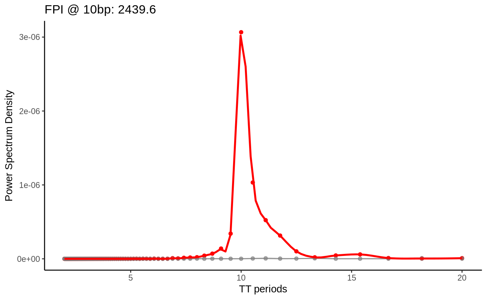

Introduction to periodicDNA
Jacques Serizay
2020-05-04
introduction-to-periodicdna.RmdIntroduction
Many oligonucleotides are periodically occurring in genomes across eukaryotes, and some are impacting the physical properties of DNA. For example, DNA bendability is modulated by 10-bp periodic occurrences of WW (W = A/T) dinucleotides. periodicDNA is an R package offering a set of functions to identify k-mer periodicity in sequences of interest such as regulatory elements. It also provides a method to generate continuous tracks of k-mer periodicity over genomic loci.
How perioDNA works
When running getPeriodicity() function for a given k-mer (typically a dinucleotide) over a set of GRanges, R does the following steps:
- It first finds all the possible motif occurrences over the GRanges;
- It then find all the possible pairwise distances and generates a normalised histogram of the pairwise distances;
- It performs a Fast Fourier Transform of the normalised histogram;
- Finally, it outputs the power spectrum density of the k-mer in the provided GRanges.
Quick k-mer periodicity
A genome sequence and a set of genomic loci must be defined. Let’s focus on the C. elegans genome for now, and more specifically around its ubiquitous TSSs.
data(ce_proms)
ce_seq <- getSeq(
BSgenome.Celegans.UCSC.ce11::BSgenome.Celegans.UCSC.ce11
)
ubiq_TSSs <- ce_proms[ce_proms$which.tissues == 'Ubiq.'] %>%
deconvolveBidirectionalPromoters() %>%
alignToTSS(50, 300)
ubiq_TT <- getPeriodicity(
ubiq_TSSs,
genome = ce_seq,
motif = 'TT',
cores = 1
)
#> - Mapping k-mers.
#> - 3668916 k-mers found.
#> - Calculating pairwise distances.
#> - Normalizing histogram vector.
#> - Applying Fast Fourier Transform to the vector of distances.
#> - Computing signal-to-noise ratios.
plotPeriodicityResults(ubiq_TT)
#> [[1]]
#>
#> [[2]]
#>
#> [[3]]
Fold Power Increase metric
The FPI (fold power increase) metric was originally described in Pich et al., Cell 2018. It allows to accurately estimate the periodicity strength of a k-mer of interest by modelling the background periodicity.
fpi <- getFPI(
ce_seq[ubiq_TSSs],
motif = 'TT',
parallel_shuffling = 1,
n_shuffle = 3
)
#> - Calculating observed PSD
#> - Mapping k-mers.
#> - 3668916 k-mers found.
#> - Calculating pairwise distances.
#> - Normalizing histogram vector.
#> - Applying Fast Fourier Transform to the vector of distances.
#> - Computing signal-to-noise ratios.
#> >> Measured PSD @ 10bp is: 3.06609400342861e-06
#> - Shuffling 1/3
#> - Shuffling 2/3
#> - Shuffling 3/3
plotFPI(fpi)
Generating periodicity tracks with periodicDNA
Rather than computing the periodicity of a chosen k-mer in a given set of sequences, generatePeriodicityTrack() function computes a linear periodicity track covering loci of interest.
generatePeriodicityTrack(
ce_seq,
granges = ce_proms[1],
MOTIF = 'TT',
FREQ = 1/10,
PROCS = 1
)
#>
#> The genome has been divided in 100-bp bins
#> with a sliding window of 2-bp.
#>
#> 549 windows overlap the input
#> loci (extended to 1000-bp).
#>
#> The mapping will be split among 1 jobs.
#>
#> Each job will analyse 549 bins.
#>
#> Now starting...
#>
#> >> 1 bins computed /// TIME: 2020-05-04 17:22:23
#> >> 549 bins computed /// TIME: 2020-05-04 17:22:47
#>
#> SUCCESS: TT-periodicity_g-100^2_b-100^5.bw has been created!
#> 1098 bases covered by the generated track.
#> [1] TRUESession info
sessionInfo()
#> R version 3.5.2 (2018-12-20)
#> Platform: x86_64-pc-linux-gnu (64-bit)
#> Running under: Ubuntu 18.04.2 LTS
#>
#> Matrix products: default
#> BLAS: /usr/lib/x86_64-linux-gnu/blas/libblas.so.3.7.1
#> LAPACK: /usr/lib/x86_64-linux-gnu/lapack/liblapack.so.3.7.1
#>
#> locale:
#> [1] LC_CTYPE=en_GB.UTF-8 LC_NUMERIC=C
#> [3] LC_TIME=en_GB.UTF-8 LC_COLLATE=en_GB.UTF-8
#> [5] LC_MONETARY=en_GB.UTF-8 LC_MESSAGES=en_GB.UTF-8
#> [7] LC_PAPER=en_GB.UTF-8 LC_NAME=C
#> [9] LC_ADDRESS=C LC_TELEPHONE=C
#> [11] LC_MEASUREMENT=en_GB.UTF-8 LC_IDENTIFICATION=C
#>
#> attached base packages:
#> [1] parallel stats4 stats graphics grDevices utils datasets
#> [8] methods base
#>
#> other attached packages:
#> [1] periodicDNA_0.3.0 Biostrings_2.50.2 XVector_0.22.0
#> [4] ggplot2_3.1.1 magrittr_1.5 GenomicRanges_1.34.0
#> [7] GenomeInfoDb_1.18.2 IRanges_2.16.0 S4Vectors_0.20.1
#> [10] BiocGenerics_0.28.0
#>
#> loaded via a namespace (and not attached):
#> [1] SummarizedExperiment_1.12.0 zoo_1.8-5
#> [3] tidyselect_0.2.5 xfun_0.5
#> [5] purrr_0.3.2 lattice_0.20-38
#> [7] colorspace_1.4-1 htmltools_0.3.6
#> [9] rtracklayer_1.42.2 yaml_2.2.0
#> [11] XML_3.98-1.19 rlang_0.4.2
#> [13] pkgdown_1.4.1 pillar_1.3.1
#> [15] glue_1.3.1 withr_2.1.2
#> [17] BiocParallel_1.16.6 matrixStats_0.54.0
#> [19] GenomeInfoDbData_1.2.0 plyr_1.8.4
#> [21] stringr_1.4.0 zlibbioc_1.28.0
#> [23] munsell_0.5.0 gtable_0.3.0
#> [25] memoise_1.1.0 evaluate_0.13
#> [27] labeling_0.3 Biobase_2.42.0
#> [29] knitr_1.22 Rcpp_1.0.1
#> [31] BSgenome_1.50.0 scales_1.0.0
#> [33] backports_1.1.3 DelayedArray_0.8.0
#> [35] desc_1.2.0 fs_1.3.1
#> [37] Rsamtools_1.34.1 digest_0.6.18
#> [39] stringi_1.3.1 dplyr_0.8.0.1
#> [41] grid_3.5.2 rprojroot_1.3-2
#> [43] tools_3.5.2 bitops_1.0-6
#> [45] lazyeval_0.2.2 RCurl_1.95-4.12
#> [47] tibble_2.1.1 crayon_1.3.4
#> [49] pkgconfig_2.0.2 BSgenome.Celegans.UCSC.ce11_1.4.2
#> [51] Matrix_1.2-17 MASS_7.3-51.1
#> [53] assertthat_0.2.1 rmarkdown_1.12.6
#> [55] R6_2.4.0 GenomicAlignments_1.18.1
#> [57] compiler_3.5.2